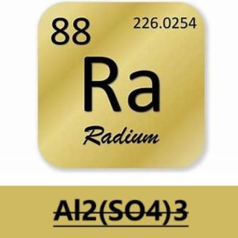
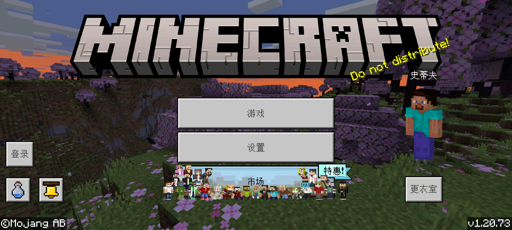

硫酸铝的新闻站
本新闻站模板代码取自『[PCL2新闻主页]:https://github.com/Light-Beacon/PCL2-NewsHomepage (作者:最亮的信标)』.
本新闻站主要记录由Al2(SO4)3-硫酸铝整理的部分消息,内容多与其本人关注点有关,并不是那些正式的新闻站,请您了解.本新闻站内容仅供参考,请勿用于商业用途,内容可能已经过时,请谨慎参考.

MCBE-1.20.73更新
简介:1.20.73是基岩版的一次次要更新,在除Nintendo Switch和Xbox外的平台上发布于2024年4月1日,修复了一个崩溃.此版本与1.20.70至1.20.72相互兼容.
内容:修复了游戏过程中可能发生的崩溃.